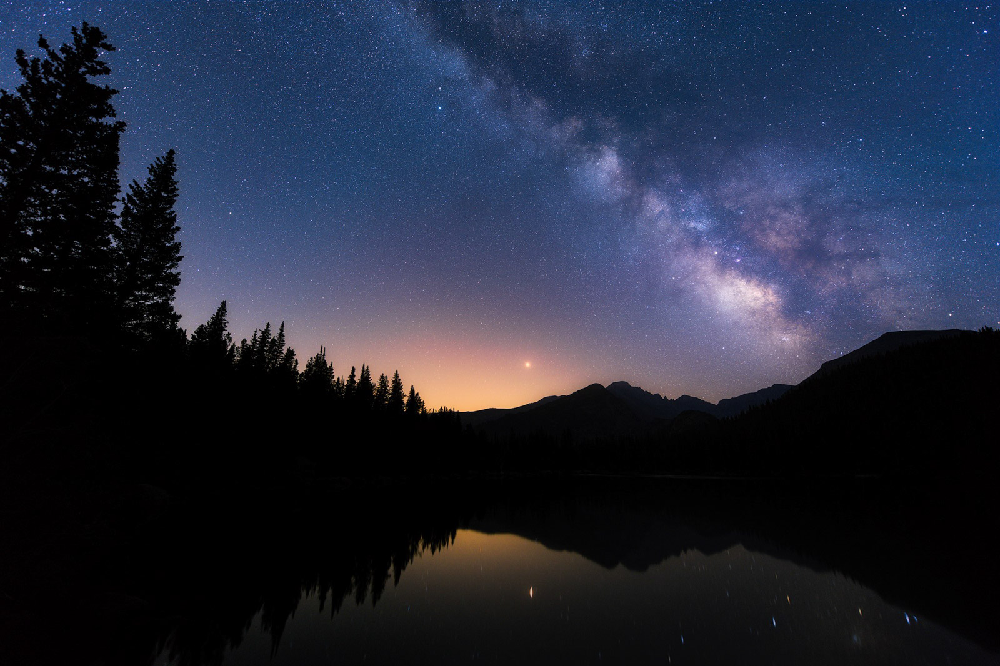
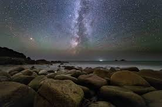

Let's explore the fascinating world of astrophotography, a captivating blend of photography and astronomy that allows enthusiasts to capture the awe-inspiring beauty of the cosmos. Astrophotography involves using specialized equipment, such as telescopes, cameras, and tracking mounts, to photograph celestial objects ranging from distant galaxies and nebulae to planets and star clusters. With advancements in technology and accessibility of equipment, astrophotography has become increasingly popular among amateur astronomers and photography enthusiasts alike, enabling them to document the wonders of the universe from their own backyard observatories or remote dark sky locations.
One of the most rewarding aspects of astrophotography is the sense of wonder and awe it evokes. By peering through the lens of a telescope and capturing the faint light emitted by distant stars and galaxies, astrophotographers gain a deeper appreciation for the vastness and complexity of the cosmos. Whether photographing the ethereal glow of the Milky Way arching across the night sky or capturing the intricate details of a distant planetary nebula, astrophotography allows individuals to witness celestial phenomena that are otherwise invisible to the naked eye, sparking a sense of curiosity and wonder about the mysteries of the universe.
Moreover, astrophotography serves as a powerful tool for scientific inquiry and discovery. Amateur astrophotographers contribute valuable data to professional astronomers by capturing images of transient events such as supernovae, comets, and asteroid occultations. Citizen science projects, such as the search for exoplanets or the monitoring of variable stars, rely on the contributions of amateur astronomers to collect observational data and analyze celestial phenomena. Through their passion for astrophotography, enthusiasts not only advance our understanding of the universe but also foster a sense of collaboration and camaraderie within the astronomical community.
Furthermore, astrophotography offers a unique blend of technical skill and artistic expression. Achieving stunning astrophotographic images requires mastering complex techniques such as long-exposure photography, image stacking, and post-processing, while also harnessing creativity to compose visually compelling shots. From capturing the subtle colors of a nebula to framing the moon against a backdrop of stars, astrophotography allows individuals to unleash their artistic vision and create breathtaking images that inspire awe and wonder. Whether as a hobbyist pursuit or a professional endeavor, astrophotography provides a gateway to explore the beauty and mystery of the cosmos through the lens of a camera.
